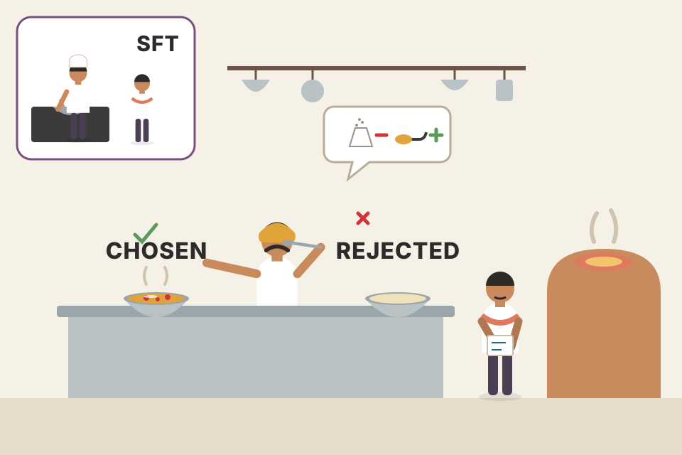
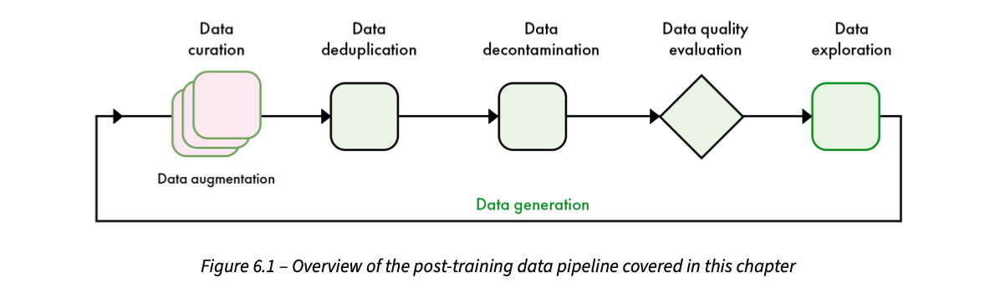
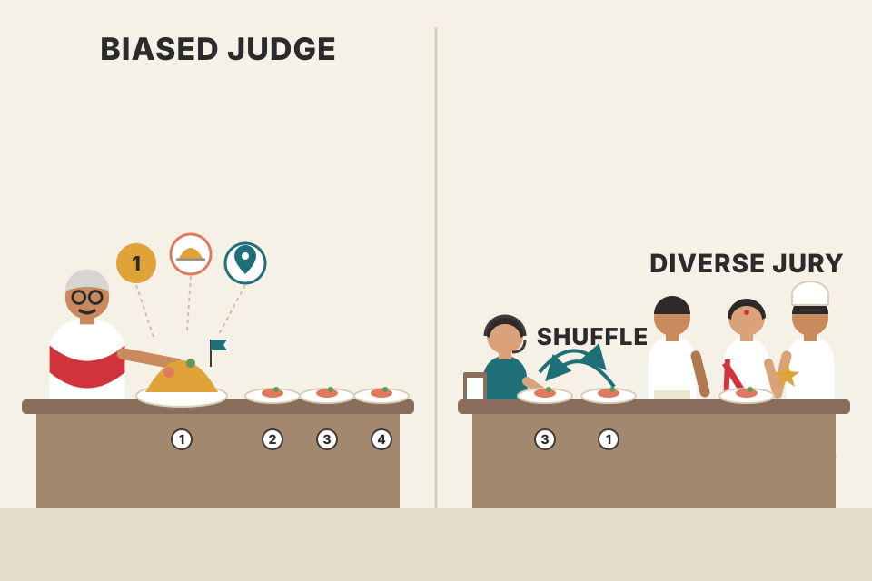
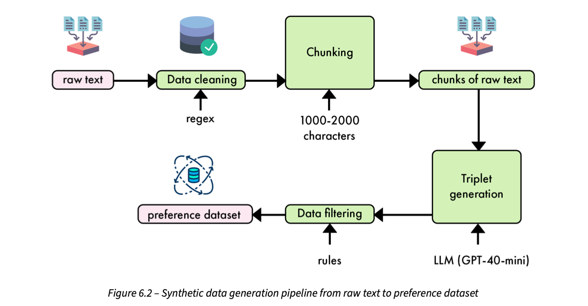
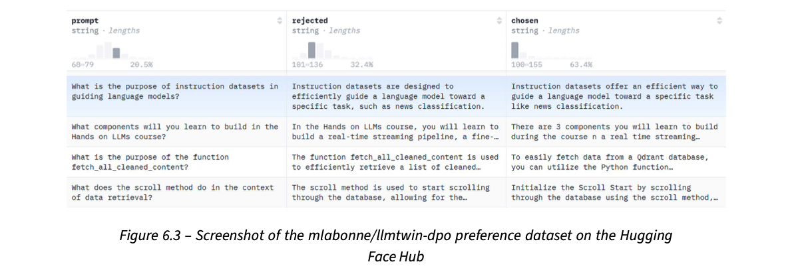
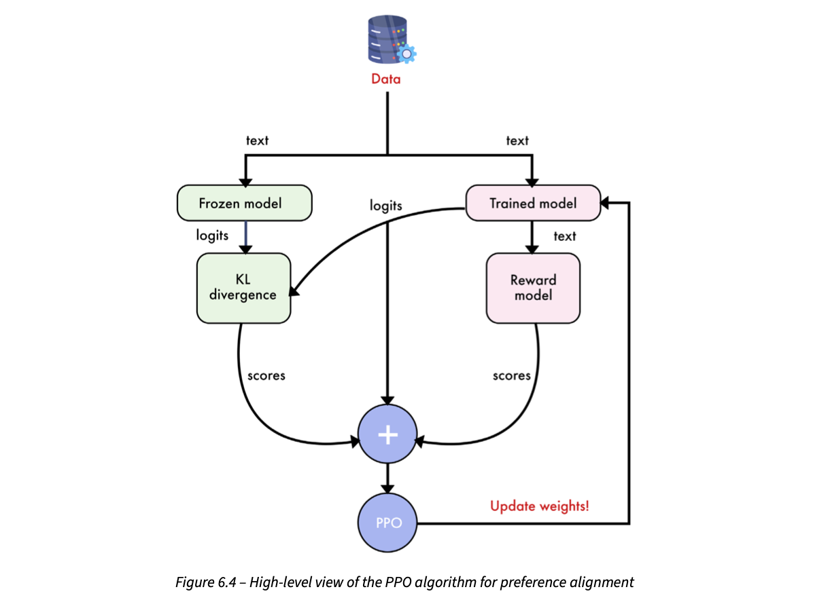
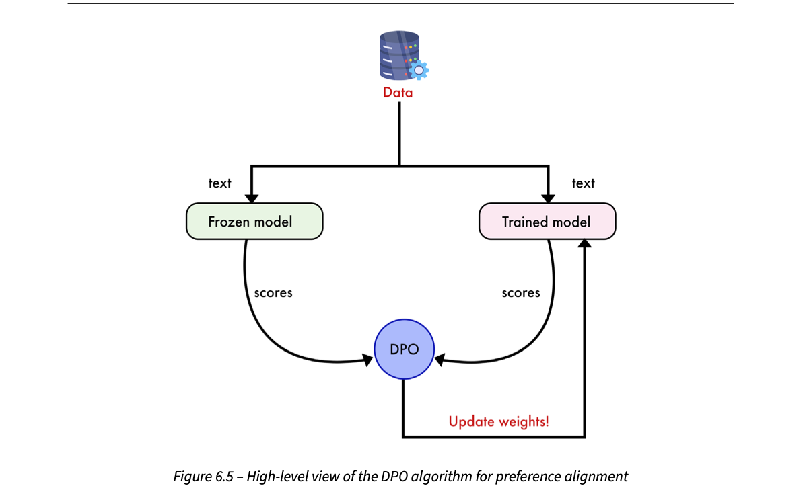
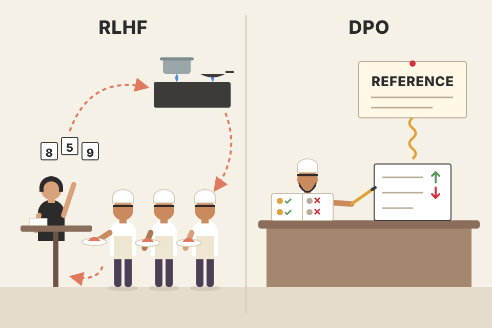
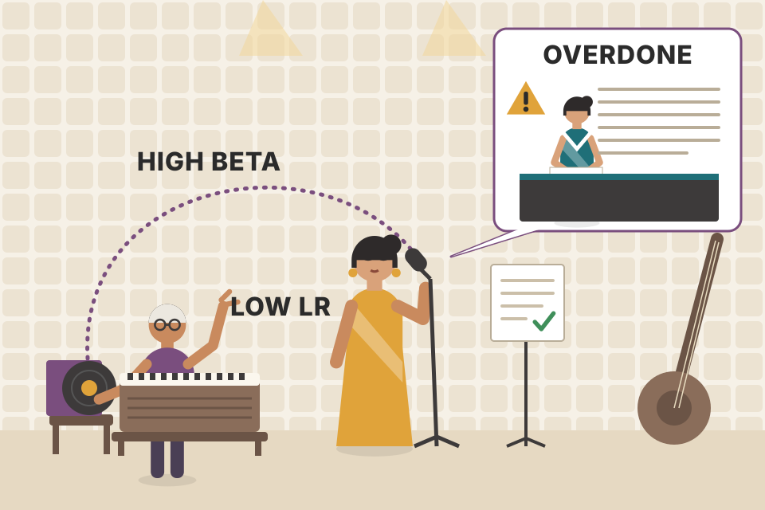
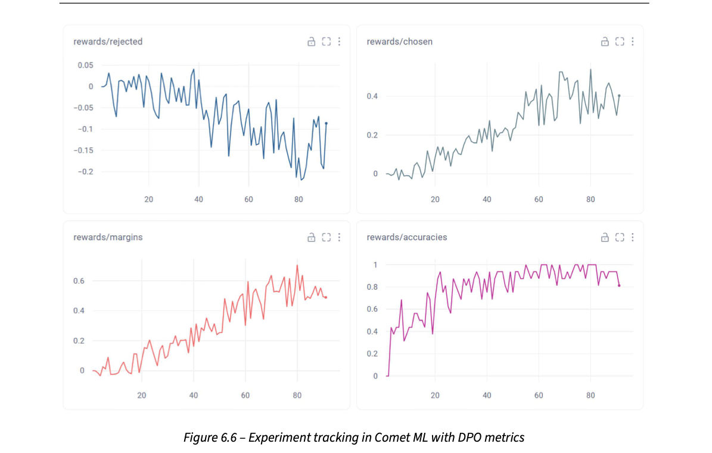

After SFT (supervised fine-tuning) in Chapter 5 the TwinLlama model can answer instructions, but it still sounds like a polite, slightly stiff AI rather than the authors' blog voice. SFT only ever shows the model good answers, so it cannot learn the fine shades of "this is nicer than that". Preference alignment fixes this by training on pairs: for each instruction, one chosen answer and one rejected answer. The chapter first explains what such datasets look like, how big they must be, and how to generate and judge them (with humans or with LLM judges and their biases). Then it builds the LLM Twin's own preference dataset, where the chosen answer is a verbatim extract of the real article and the rejected answer is GPT-4o-mini's rewrite. It walks from RLHF (reinforcement learning from human feedback) with PPO to the simpler DPO (Direct Preference Optimization), and finally trains TwinLlama-3.1-8B with DPO in Unsloth, explaining beta, the very low learning rate and the new reward/margin/accuracy metrics in Comet ML.
Read the rows top to bottom. Each orange box is the idea the next row builds on. The whole chapter is one argument: SFT copies good answers but cannot express "better vs worse", so collect pairs of answers, then use the simplest algorithm (DPO) that pushes the model toward the chosen one while staying close to the SFT model.
Supervised Fine-Tuning (SFT) was the workhorse of Chapter 5: show the model an instruction and one good answer, and train it to reproduce that answer. It works well for teaching a task and a chat format. But the book points at two things SFT handles badly:
The family of methods that addresses this is called preference alignment. Its key move: put direct feedback, from humans or from AI, into training. Instead of "copy this answer", the signal is "prefer this answer over that one". This gives a richer picture of what people want, especially in complex cases where plain supervised learning falls short.
Many preference-alignment techniques exist. This chapter mostly uses Direct Preference Optimization (DPO) because it is simple and efficient. The plan of the chapter:
By the end you should be able to build your own preference datasets and align models with several techniques. All the chapter's code is in the book's GitHub repository (PacktPublishing/LLM-Engineering).

A new cook at a dhaba learns dal by watching the head cook make it once (that is SFT: copy one good example). The food is edible but bland. Then the owner starts tasting two bowls side by side, "this one, not that one: less salt, more tadka". After a few weeks of side-by-side tastings the cook's dal matches the house style. That side-by-side tasting is preference alignment. Where it breaks: the owner tastes real bowls the cook made; in DPO the pairs are usually prepared in advance and the model never "cooks" during training.
SFT's loss raises the probability of the target tokens and nothing else. It never explicitly lowers the probability of bad answers. A preference loss uses two answers at once, so it can push one up and the other down. That "push away from" signal is what SFT lacks, and it is why a small preference dataset can change style or refusals that SFT struggles to fix.
"Why isn't SFT enough? Why do labs do RLHF or DPO after it?" → "SFT is imitation: it only learns from positive examples and has one target per prompt, so it can't encode 'A is better than B'. Preference alignment trains on comparisons, which carry the nuance (tone, helpfulness, safety) and also tells the model what to avoid. Typically you SFT for format and skills, then align with preferences for quality and style."
Good news first: the rules for building a high-quality preference dataset are the same as for the instruction datasets of Chapter 5. You still want to maximise three things in your samples:
And you go through the same stages: data curation, deduplication, decontamination (removing samples that overlap with evaluation benchmarks), quality evaluation, exploration, generation and augmentation.

How to read this figure. Follow the arrows left to right: curated data (the stacked pink cards; augmentation creates extra copies or variants of them) goes through deduplication, then decontamination, then a quality check (the diamond is a decision: keep or drop), then exploration (looking at the data's topics and lengths). The long arrow at the bottom, labelled data generation, loops back to the start: when exploration shows gaps, you generate more data and run it through the same pipeline again. It is a cycle, not a one-way street.
To avoid repeating Chapter 5, the book focuses only on what is different for preference data:
A kirana shop restocking: check what came in (curate), remove double entries in the register (dedup), set aside items reserved for a customer's order so you don't sell them (decontaminate: keep test data out of training), discard spoiled packets (quality), look at which shelves are empty (explore), then order more (generate) and the cycle starts again. Where it breaks: here each "item" is a pair of answers, so quality checks must judge both sides and the gap between them.
The pipeline is the same because the same failure modes exist: duplicates make the model over-weight some examples; benchmark leakage inflates scores; low-quality samples teach bad habits. What changes is what each step looks at: in a preference sample, a weak chosen answer or a rejected answer that is actually better both corrupt the signal.
"How would you build a preference dataset?" → "Same pipeline as SFT data: curate, dedupe, decontaminate against eval sets, score quality, explore distributions, generate to fill gaps, augment. The differences are in generation (you need two answers per prompt that differ in a meaningful way) and evaluation (deciding which is chosen, usually with pairwise LLM judging)."
Instruction datasets have standard formats (Alpaca, ShareGPT). Preference datasets do not, because each training algorithm wants slightly different data. In general, preference data is a set of responses to one instruction, ranked by humans or by language models. Since the chapter uses DPO, it looks at DPO's format, which is very simple: each instruction comes with exactly one preferred (chosen) answer and one rejected answer. Training aims to make the model produce the chosen kind of answer rather than the rejected kind.
Table 6.1 shows one sample from the mlabonne/orpo-dpo-mix-40k dataset. The instruction asks for a joke about octopuses. The chosen answer is a pun that works (octopuses and counting past eight, because they have eight arms). The rejected answer is a weaker joke about "ten tickles" (a play on "tentacles"). Both are jokes; one is simply better.
| Column | What it holds (Table 6.1 paraphrased) |
|---|---|
instruction | "Tell me a joke about octopuses." |
chosen | A card-playing/casino pun whose punchline is that octopuses can't count beyond eight. |
rejected | A riddle about how many tickles make an octopus laugh, answer "ten tickles". |
The rejected answer matters as much as the chosen one. Remove it and you just have an instruction dataset. Rejected answers describe the behaviour you want to remove from the model. This makes preference data flexible. The book lists six cases where preference data beats SFT alone:
In all six, preference data captures subjective quality that goes beyond "correct" or "followed the instruction". The result is output that is accurate and also closer to human judgment on open-ended tasks.
Format notes. There is no Alpaca/ShareGPT-style standard. Most datasets look like Table 6.1: a column for the instruction, one for the preferred answer, one for the rejected answer. Multi-turn conversations are rare in preference alignment; at the time of writing, the major fine-tuning libraries did not support them and usually kept only the first or last message of a conversation.
Pick a use case. Two candidate answers appear. Click the one you would mark chosen; the other becomes rejected. The page then shows the JSON row you just created and what the model would learn from it. Examples are invented for this page.
Teaching a child manners with only "say this" (SFT) versus "say this, not that" ("Please pass the salt", not "Give salt"). The "not that" part is the rejected answer, and it is what makes the lesson stick. Where it breaks: a child understands the reason; the model only sees that one token sequence should become more likely than the other.
Training compares how likely the model finds the chosen answer versus the rejected one for the same prompt. Because the prompt is shared, anything common to both answers cancels out; only the difference drives learning. This is why a good pair differs in exactly the property you care about (tone, conciseness, identity) and is similar otherwise.
You want a support bot to stop saying "As an AI language model…". Take 300 real user questions. For each, the rejected answer is the current model's reply that starts with that phrase; the chosen answer is the same reply with the phrase removed and a friendlier first line. The only difference is the habit you want to kill, so the signal is clean.
"What does a DPO dataset look like?" → "Rows of prompt, chosen, rejected. No standard like Alpaca; mostly single-turn, since libraries usually take only the first or last message. The rejected answer is the important part: it encodes the behaviour to suppress. Good pairs differ mainly in the property you're targeting."
prompt / chosen / rejected) · plate 14 (formatting for the trainer) · Ch.5 (Alpaca / ShareGPT formats).DPO usually needs fewer samples than SFT to change a model's behaviour noticeably. As with instruction data, the right count depends on two things:
Quality is still crucial, and more good pairs generally help. The book describes three scales:
| Scale | Who / what | Typical size |
|---|---|---|
| General-purpose alignment | LLM providers improving the overall quality of their fine-tuned models. Big players (the book names Nvidia and Meta) are converging on similar post-training pipelines: several rounds of preference alignment plus heavy use of synthetic data. That they agree suggests these methods work best for pushing capabilities. | millions |
| Open-source community | Improving model performance in general; it raises benchmark scores and also "heals" models after merging, pruning and other modifications. | 10,000–100,000 |
| Task-specific alignment | Improving one function: changing writing style, refusing certain instructions, and so on. | 100–10,000 |
| Example: identity | Make the model say it was not trained by OpenAI, Meta or another provider but by you. Rejected = answers claiming another origin; chosen = correct statement. | 200–500 |
A key remark: DPO is less destructive than SFT and has a milder effect on the final model. That is why it can be used to repair models after surgery like merging or pruning without wrecking what they knew.
Choose the goal. The bar highlights the book's range for it. The sliders nudge a suggested starting point inside that range using the book's two rules (bigger model → fewer; harder task → more). The formula is invented for this page, only the ranges are the book's.
The ladder uses a log scale from 100 to 10 million pairs.
Adjusting a good cook's seasoning takes a handful of tastings; teaching a beginner all of Indian cuisine takes years. Task-specific DPO is the seasoning adjustment; provider-scale alignment is the full culinary school. Where it breaks: unlike tastings, preference pairs can be generated by machines in bulk, which is why providers reach millions.
DPO is anchored to a reference model (plate 12), so each update is a nudge relative to where the model already is. It reweights behaviours the model can already produce rather than teaching brand-new ones. That is why small datasets work for narrow goals, and why the method is "less destructive" than SFT, which directly overwrites token predictions.
"How much preference data do I need?" → "Depends on scope. A narrow behaviour like identity can move with a few hundred pairs; style or refusals with hundreds to ten thousand; general improvement in open source uses 10k–100k; frontier labs use millions with several rounds and lots of synthetic data. Bigger models need fewer samples, harder tasks more, and quality beats count."
For preference data, generation and evaluation are tightly linked: you first create answers, then rate them, and the ratings decide which answer is chosen and which is rejected. So the book treats them as one process.
Look before you build. Before generating new data, check existing open-source preference datasets. There are fewer than for instructions, but good ones exist on the Hugging Face Hub, usable for a specific task or to mix into your own. Two well-known ones:
DPO datasets can be built in several ways, each trading off quality, cost and scalability, with more or less human involvement. The book uses a two-by-two grid: who writes the answers × who judges them. Click a cell.
Meter lengths are a modelled reading of the book's words, not measurements.
The book's overall verdict. Human-generated data is expensive, hard to scale, and not even necessarily the best quality. Human evaluation is valuable but also hard to scale, so large datasets lean on LLM evaluation. Beyond these high-level points, think about where your data comes from and how you will use it. For example, an application with many users can build in a feedback mechanism: a simple like/dislike, or richer written feedback.
Evaluation is not always needed. Sometimes preferences come "for free" from how you generate:
Intel/orca_dpo_pairs dataset on the Hub was made this way.Writing exam answers versus marking them. A teacher can mark fifty answer sheets in the time it takes to write one model answer. That is why "LLM writes, human ranks" is popular: humans do the part they are fast and good at. Where it breaks: if every answer sheet came from the same coaching-centre guide, the teacher only ever sees one style, which is the "no unexpected answers" weakness.
Preference learning needs a reliable ordering, not perfect answers. Anything that gives a trustworthy ordering works: human ranks, an LLM judge, a known quality gap (strong vs weak model) or a known ground truth (human text vs model text). Choosing the cheapest trustworthy ordering is the real design decision.
A voice-assistant team logs 50,000 calls a month with thumbs-up/down. For each disliked reply, they regenerate an answer with a stronger model and keep it if a reviewer approves: rejected = original disliked reply, chosen = approved regeneration. That is "LLM-generated, human-evaluated", seeded by real user feedback.
"How would you get preference data cheaply?" → "Four routes: human/human (gold but expensive), human/LLM (rare), LLM/human (good balance, humans rank), LLM/LLM (fully synthetic, scales, watch biases). Often you can skip judging: strong-vs-weak model outputs, or human-written vs model-written, give the order for free. In a product, likes and dislikes are a free preference signal."
Generation works the same way for instruction and preference datasets. Three tips:
argilla/Capybara-Preferences does this, combining GPT-4 with open-weight models; an evaluation step then picks the chosen and rejected answers.A toy model chooses the next word after "Fine-tuning helps the model…". Move the temperature and resample five completions. Low temperature repeats the safest word; high temperature spreads out (and starts picking odd words). Probabilities are invented.
Asking one aunty for a biryani recipe gives one style. Asking aunties from Hyderabad, Lucknow and Kolkata gives three, and now you can actually learn which the family prefers. Multiple LLMs and prompts that ask for different styles are those different aunties; temperature is how much each improvises. Where it breaks: too much improvisation (very high temperature) gives "biryani with chocolate", which is diverse but useless.
Temperature divides the model's scores (logits) before the softmax. Below 1 it sharpens the distribution toward the top token; above 1 it flattens it so rarer tokens get picked more. For preference data you want pairs that differ meaningfully; if all candidates are near-identical (too low a temperature, one model, one prompt style), the judge has nothing to choose between.
"How do you make synthetic data diverse?" → "Vary the prompt explicitly (ask for different styles, lengths, angles), vary sampling (higher temperature for open-ended text, low for code), and vary the generator (several models, like Capybara-Preferences mixing GPT-4 and open models). Then a judge picks chosen and rejected."
Evaluation can be done by human raters or automated with LLMs. LLM evaluation means: write detailed criteria, write a prompt that explains them clearly to the LLM, and let the model pick preferred and rejected answers. Compared to humans it is more scalable and applies the criteria consistently. But its quality depends directly on the judge model and on your guidelines; it can miss subtle human preferences or cultural nuances. As LLMs improve, their judgments improve too, so datasets can get better over time.
Two ways to ask an LLM judge:
Because preference data is comparative by nature, pairwise ranking is the ideal fit: generally more accurate and better correlated with human judgment than absolute scoring, and it matches the natural way people compare options.
Making pairwise judging even better:
Table 6.2 is a concrete pairwise judge prompt. Its parts, paraphrased: a role ("you are an answer judge"), the task (compare answer A and answer B on how well they answer the instruction), six criteria (relevance, accuracy, completeness, clarity, structure, conciseness), three slots ({instruction}, {answer_a}, {answer_b}), and a required output format: first a step-by-step Reasoning comparing the two, then Best answer: A or B.
JUDGE = """Role: you judge answers.
Task: say whether A or B better answers the instruction.
Criteria: relevance, accuracy, completeness, clarity,
structure, conciseness.
Instruction: {q}
A: {a}
B: {b}
First write 'Reasoning:' comparing them step by step,
then 'Best answer:' followed by A or B."""My own shortened version of the idea. Asking for reasoning before the letter is the chain-of-thought trick; the fixed "Best answer:" line makes parsing easy.
Three biases of LLM judges:
Fixes:
200 pairs where the truly better answer is known. The simulated judge has a position bias (extra pull toward whichever answer is shown first) and a length bias (extra pull toward the longer answer; here the better answer is the shorter one 50% of the time). Turn on the fixes and see agreement with the truth. All numbers are modelled.
In this toy setup, without randomization the better answer is always shown second, so position bias works against it every time. Randomizing turns a systematic error into noise; a jury averages several judges' different biases.
Next, the book builds its own dataset and avoids a judge entirely: the generation process itself makes the chosen (human-written) and rejected (LLM-written) answers.

A cooking contest judge who always likes the first plate (position), the bigger portion (length) and food from his own state (family). Fixes: shuffle plate order, show him calibration plates where a small portion won, and use a panel of three judges from different states. Where it breaks: a panel of three copies of the same judge (same model family) does not cancel family bias; the jury must be diverse.
An absolute score must be calibrated against an imagined scale that drifts between calls; a comparison only needs a relative decision, which is easier and more stable. Biases come from training: models learned that longer, more detailed answers were often rated higher, and they find their own phrasing more "likely" (lower perplexity), which feels "better" to them.
You judge 10,000 pairs with one judge. A spot check shows it picks the first answer 68% of the time on pairs where humans are split 50/50. You rerun each pair twice with A/B swapped and keep only pairs where both runs agree: 7,400 pairs survive. Those are your cleaner labels; the 2,600 disagreements were mostly position bias.
"How do you trust an LLM judge?" → "Prefer pairwise over absolute scores; give a reference answer or have the judge write a grading note; ask for reasoning before the verdict. Then fight known biases: randomize or swap A/B for position bias, use balanced few-shot examples for length and family bias, and use a jury of different model families. Spot-check against human labels." This is the same toolkit for evaluating a RAG or agent system.
After Chapter 5, TwinLlama can write paragraphs about machine-learning topics, but it doesn't sound like the authors. Changing a model's "voice" to imitate source data is a textbook use case for preference alignment.
A warning from experiments: DPO tends to make models more verbose and push them toward very formal language. Here we want the opposite (the casual style of blog posts), so DPO must be used surgically: lightly, with care, to avoid that pitfall (this shapes the hyperparameters in plate 14).
The idea: the chosen answers are extracts copied straight from the authors' articles; the rejected answers are generated by a model. The code is a modified version of the Chapter 5 instruction-dataset generator. Instead of pairs (instruction, answer) we now need triples (instruction, answer 1, answer 2).
The nice part: the text chunks already contain the ground-truth answers (the authors' own words), so there is no need for an LLM judge. To make sure the extracts are good, the pipeline adds two simple quality filters, based on length and punctuation.

How to read this figure. Top row, left to right: raw text (the crawled articles) is cleaned with a regex, then chunked into pieces of 1,000–2,000 characters, giving chunks of raw text. The arrow drops down on the right to triplet generation, powered by an LLM (GPT-4o-mini; the figure's label reads "GPT-40-mini", a typo). Bottom row, right to left: the triples go through data filtering driven by simple rules, and out comes the preference dataset. The small arrow under each box names the tool that drives that step.
Training a mimicry artist to sound like a famous Hindi film actor. You play the original dialogue (chosen) next to the artist's attempt (rejected) and say "closer to this, away from that". You don't need a judge, because the original is by definition right. Where it breaks: the "original" here is a short article extract, which might be a messy fragment; that is why the filters exist.
GPT-4o-mini's answers carry its house style ("delve into", tidy formal sentences). The extracts carry the authors' style. Because both answer the same instruction with similar facts, the main difference between them is style, which is exactly what DPO will learn to push toward. Using the model-generated text as rejected makes it a "human vs model" pair from plate 5.
"How would you fine-tune a model to write in a specific person's voice?" → "SFT on their text gets content and format. To push style further, build DPO pairs: chosen = real excerpts from the person, rejected = an LLM's answer to the same question. The ground truth is the human text, so no judge is needed; filter for clean extracts. Train lightly, because DPO tends to drift formal and verbose."
The book walks through ten steps. Below are short renamed sketches of each idea (not the book's listing), with what each part does.
Step 1 – imports. concurrent.futures (run many LLM calls in parallel threads), json, re (regular expressions), typing helpers (List, Tuple), Dataset from Hugging Face datasets, the OpenAI client and tqdm (progress bar).
Step 2 – a PreferenceSet class replaces Chapter 5's InstructionAnswerSet. It holds triples of (instruction, generated answer = rejected, extracted answer = chosen). A from_json class method parses the LLM's JSON (a list under the key preference_triples, each with instruction, generated_answer, extracted_answer) into tuples, and __iter__ lets you loop over it.
class Triples:
def __init__(self, rows): self.rows = rows # [(q, gen, ext), ...]
@classmethod
def parse(cls, text):
items = json.loads(text)["preference_triples"]
return cls([(t["instruction"], t["generated_answer"],
t["extracted_answer"]) for t in items])
def __iter__(self): return iter(self.rows)Step 3 – unchanged helpers from Chapter 5. load_articles_from_json reads cleaned_documents.json and builds a Hugging Face Dataset with the text and metadata: id, content, platform, author id, author full name, link.
Step 4 – clean_text. Replaces every character that is not a word character, whitespace, or one of . , ! ? ' with a space, then collapses runs of whitespace into one space and trims.
Step 5 – extract_substrings. Splits each cleaned article into chunks of 1,000–2,000 characters without breaking sentences (breaking a sentence could change its meaning). A regex splits only at whitespace that follows ., ? or !, with look-behinds that avoid splitting after abbreviations like "e.g." or "Mr.". Sentences are appended to the current chunk while it stays ≤ 2,000 characters; when the next one would overflow, the chunk is saved if it is ≥ 1,000 characters and a new chunk starts. The last chunk is kept if long enough.
def chunk(text, lo=1000, hi=2000):
out, cur = [], ""
for s in split_sentences(clean(text)): # regex split after . ? !
if len(cur) + len(s) <= hi: cur += s + " "
else:
if len(cur) >= lo: out.append(cur.strip())
cur = s + " "
if len(cur) >= lo: out.append(cur.strip())
return outStep 6 – generate_preference_triples replaces generate_instruction_answer_pairs. Its prompt asks for five triples per extract: (1) an instruction about a specific topic in the context, (2) a generated answer that tries to answer from the context, (3) an extracted answer, a relevant excerpt taken directly from the context. Extra rules in the prompt:
... or [...]) to mark skipped text.preference_triples list.Step 7 – the API call. GPT-4o-mini in JSON mode (response_format={"type": "json_object"}), a system prompt saying it generates instruction–answer triples, max_tokens=2000, temperature=0.7. The JSON reply goes straight into PreferenceSet.from_json and the function returns the list of tuples.
resp = client.chat.completions.create(
model="gpt-4o-mini",
messages=[{"role": "system", "content": SYSTEM_TRIPLES},
{"role": "user", "content": prompt_for(chunk_text)}],
response_format={"type": "json_object"}, # guaranteed-parsable JSON
max_tokens=2000, temperature=0.7)
rows = Triples.parse(resp.choices[0].message.content).rowsStep 8 – two new filters (heuristics for poor quality), both applied with Dataset.filter:
filter_short_answers: keep rows whose chosen answer has at least 100 characters.filter_answer_format: keep rows whose chosen answer is non-empty, starts with an uppercase letter and ends with ., ! or ?.Step 9 – create_preference_dataset replaces create_instruction_dataset. It chunks the articles, submits one generation job per chunk to a ThreadPoolExecutor (default 4 workers), collects results as they complete (with a tqdm bar), unzips the triples and builds a Dataset with columns prompt (instructions), rejected (generated answers) and chosen (extracted answers).
Step 10 – main. (1) load the raw articles, (2) create the preference dataset, (3) filter short answers, (4) filter by format, (5) push_to_hub. It prints the dataframes along the way.
Type or edit a chosen answer. The page applies the book's two rules (≥ 100 characters; starts uppercase and ends with . ! ?).
A clipping service that cuts quotes from newspapers: the cutter must cut whole sentences (no "..."), the quote must start with a capital and end with a full stop, and anything shorter than a line is thrown away. Where it breaks: a clipping can follow every rule and still be a dull, useless quote; the filters check form, not meaning.
GPT-4o-mini does the hard, semantic part (inventing a sensible question and finding the matching span); cheap Python rules catch its typical slips: copying a fragment that starts mid-sentence, or too short a span. JSON mode removes the "the model returned almost-JSON" failure. The thread pool hides the network latency of hundreds of API calls, which is I/O-bound, so threads are fine despite Python's GIL.
"Design a synthetic data generator with an LLM API." → "Chunk the source at sentence boundaries, call the LLM in JSON mode with a strict schema and rules (verbatim spans, no ellipsis, self-contained questions), parallelise with a thread pool since it's I/O-bound, then apply cheap rule filters (length, casing, end punctuation) before pushing to a dataset store. Iterate on the prompt with manual review." That's the same shape as batch-enrichment jobs in a RAG ingestion pipeline.
create_preference_dataset() produced 2,970 samples. Heavy filtering kept only 1,467 (about 49%), dropping answers that were too short or badly formatted. (The book's parenthetical describes the format rule loosely; the rule in the code is: must start with an uppercase letter and end with a period, exclamation mark or question mark.)
The final dataset is public on the Hugging Face Hub as mlabonne/llmtwin-dpo.

How to read this figure. Three columns: prompt, rejected, chosen. The small histograms at the top show string lengths (most prompts 68–79 characters; most rejected answers 101–136; most chosen answers 100–155). The highlighted first row asks about the purpose of instruction datasets. Both answers say essentially the same thing (guiding a model toward a task like news classification), but the rejected one is phrased formally ("are designed to efficiently guide") while the chosen one is slightly more casual ("offer an efficient way to"). That is the subtle style nuance the dataset captures. Other rows show the same pattern, and also that chosen extracts can be a bit rough (one contains a stray "n"), which is real blog text.
Prompt iteration matters. The authors iterated many times on the generation prompt, with manual evaluation and experiments, until results were satisfying. The prompt's quality is fundamental, so they recommend the same process for your own preference datasets.
Next comes theory: RLHF and DPO, with the new parameters used in the final section.
Out of 2,970 mangoes picked, about half pass the grader's size and colour check and go into the export box. Where it breaks: the grader only checked size and colour, not taste; similarly the filters only checked length and punctuation.
Losing half the data is fine because the goal is task-specific (style): plate 4's range for that is 100–10,000 pairs, and 1,467 clean pairs sit comfortably inside it. A smaller clean set beats a larger noisy one, because noisy pairs push the model in random directions.
"Your filter removed half your synthetic data. Is that a problem?" → "Not necessarily. Check what was removed and why; if it's genuinely low quality, a smaller clean set is better for DPO, especially for a narrow style goal where a thousand-odd pairs is enough. If good data is being dropped, fix the prompt upstream rather than loosening filters."
mlabonne/llmtwin-dpo for training).Preference alignment is the umbrella name for techniques that fine-tune models on preference data. The book first surveys the field (RLHF), then focuses on the method it implements (DPO, plate 12).
RLHF combines reinforcement learning (RL), where an agent learns by trying actions and receiving rewards, with human input, to align models with human preferences and values. It arose because classic RL has two problems on complex tasks: it is hard to write a reward function by hand, and a hand-engineered reward can be misaligned with what you actually wanted.
History, in order:
How RLHF works: it iteratively improves two things, a reward model and a policy (the "policy" is the model being trained: given a prompt, it decides which tokens to output).
The key innovation is about cost. Human feedback is expensive. RLHF does not need a human watching every action: feedback can be asynchronous and sparse. The learned reward model acts as a proxy for human preferences, so RL can keep training without a human scoring each output.
PPO as an example. Proximal Policy Optimization (PPO) is one of the most popular RLHF algorithms. The reward model scores text generated by the model being trained. That reward is regularized by a Kullback–Leibler (KL) divergence term, which measures how different two probability distributions are; it keeps the trained model's token distribution close to the model before training (the frozen model).

How to read this figure. Start at Data (prompts). The same text goes to two copies of the model: the frozen model (left, green, never updated) and the trained model (right, pink). The trained model generates text, which the reward model scores. Both models' logits (raw next-token scores) go into the KL divergence box, which scores how far the trained model has drifted from the frozen one. The middle arrow also sends the trained model's logits down. The + node combines the reward score with the KL penalty (reward minus drift) and the logits, and PPO uses that to compute an update; the red "Update weights!" arrow loops back to the trained model. Count the boxes: at least three models in memory (frozen, trained, reward), plus generation inside the training loop.
Why not always RLHF? Its iterative nature and the separate reward model make it computationally expensive and potentially unstable. And despite being theoretically superior, RLHF algorithms have experimentally underperformed simpler approaches. The one that drew the most attention is DPO.
A restaurant can't have the owner taste every dish, so he trains a head taster (reward model) by tasting pairs with him for a week. Then the cooks experiment, the head taster scores each dish, and a rule says "don't change the recipe too much from the house original" (KL penalty), or cooks would drown everything in butter to please the taster (reward hacking). Where it breaks: in a real kitchen the owner keeps tasting; in RLHF the human comes back only occasionally to refresh the taster.
The reward model is just a learned approximation, with blind spots. A strong optimiser like PPO will find those blind spots (reward hacking: e.g. long, flattering text that scores high). The KL term limits how far the policy can move away from the SFT model, so it can only exploit the reward model a little. PPO itself adds "proximal" (small, clipped) steps so each update doesn't change the policy too much at once.
"Explain RLHF." → "Three stages: SFT a model; collect human pairwise preferences and train a reward model (Bradley–Terry style) to score answers; then optimise the SFT model with PPO to maximise reward, minus a KL penalty to a frozen copy so it doesn't drift or reward-hack. The reward model is a proxy that lets you train without a human scoring every sample. Downsides: several models in memory, sampling in the loop, unstable training."
DPO was introduced by Rafailov et al. (2023) in the paper Direct Preference Optimization: Your Language Model is Secretly a Reward Model. It is a streamlined alternative to classic RLHF.
The core idea: reformulate the problem. RLHF trains a separate reward model and then uses RL (PPO) to fine-tune the LLM. DPO instead derives a closed-form expression (an exact formula) for the optimal policy under the standard RLHF objective: maximise expected reward while staying close, in KL divergence, to a reference policy. With that formula, the preference learning problem can be written directly in terms of the policy, so there is no separate reward model and no complex RL algorithm.
In practice DPO is a simple binary cross-entropy loss computed on the language model's output probabilities. The loss:
How much the reference model matters is controlled by a parameter beta (β), between 0 and 1. With β = 0 the reference model is ignored, so the trained model may end up very different from the SFT model. In practice 0.1 is the most popular value, and it can be tuned (the book uses 0.5, plate 14).
Because it is just a loss, DPO trains with ordinary gradient descent: no sampling from the model during training and no RL machinery.
Slide how far the trained model has moved from the reference on the chosen and rejected answers (in log-probability units, "nats"). Positive Δ = the trained model now likes that answer more than the reference did. Watch the rewards, the margin, the loss and the gradient weight. The last line shows how far the model must drift to reach a low loss of 0.1 for the current β.
Try β = 0.1 and β = 0.5 with the same Δ values: at 0.5 the same drift gives a bigger margin and a lower loss, so the model reaches a "good" loss after moving less from the reference. That is why the authors raised β to keep the DPO model closer to the SFT model's style (plate 14).

How to read this figure. Compare it with Figure 6.4. The data still feeds a frozen model and a trained model, but there is no reward model, no KL box, no generated text and no "+" node. Each model simply produces scores (the log-probabilities of the chosen and rejected answers already in the dataset), and the DPO node turns them into a loss that updates the trained model. Two models, one loss, no sampling.
Advantages of DPO over classic RLHF (from the book):
The trade-off. RLHF allows iterative improvement over several rounds and can adapt dynamically to new preferences; DPO is a more direct route to similar results. The choice is ease of implementation vs peak performance: for very large training runs with millions of preference samples, PPO-inspired methods still have a higher ceiling. For most applications, DPO gives most of the benefit at lower compute and engineering cost.
Synthetic data helps both. As LLMs improve, they can generate data that beats human-written content in quality and diversity. That creates a virtuous cycle: better models → better data → better models. Both RLHF and DPO can be run in several rounds, each targeting different aspects of performance.
DPO's drawbacks: like RLHF it still needs paired preference data, which is costly and slow to collect; it lacks some theoretical guarantees of RL approaches; and for some complex tasks or environments the extra flexibility of RLHF may be worth it. Still, the book's verdict is that DPO is the right choice in most cases, including the LLM Twin. The implementation uses Unsloth.
| RLHF with PPO | DPO | |
|---|---|---|
| Reward model | separate, trained first | none (implicit in the policy) |
| Sampling during training | yes, the model generates | no, uses fixed pairs |
| Models in memory | trained + frozen + reward | trained + reference (one model with LoRA) |
| Stability / tuning | can be unstable | more stable, less sensitive |
| Peak at huge scale | higher ceiling (millions of pairs) | most of the benefit, cheaper |
| Iterative / online | natural: new feedback, new rounds | possible in rounds, more static per run |

RLHF is like hiring a food critic (reward model), letting cooks cook new dishes every day and the critic score them. DPO is skipping the critic: you already have a notebook of "dish A beat dish B" verdicts, and you directly adjust the recipe so it makes A-like dishes more and B-like dishes less, while the old recipe card (reference) stops you from changing everything. Where it breaks: the notebook is fixed; DPO can't learn from dishes nobody has compared yet, which is RLHF's online advantage.
The KL-constrained RLHF objective has a known optimal solution: the best policy is the reference policy reweighted by exp(reward/β). Flip that equation around and the reward can be written as β·log(π_θ/π_ref) plus a term that depends only on the prompt. Plug it into the Bradley–Terry preference probability and the prompt-only term cancels between chosen and rejected. What is left is a loss on the policy's own log-probabilities: "your language model is secretly a reward model".
Say the reference gives the chosen answer log-prob −120 and the rejected −118 (it slightly prefers the rejected, formal answer). After some training, the model gives −119 and −121. Then Δw = +1, Δl = −3, gap = 4. With β = 0.1: margin 0.4, loss = −log σ(0.4) ≈ 0.51. With β = 0.5: margin 2.0, loss ≈ 0.13. Same drift, much lower loss at higher β, so higher β is satisfied with less change from the reference.
"DPO vs PPO?" → "DPO uses the closed-form optimum of the KL-regularised RLHF objective to turn preference learning into a binary cross-entropy loss on log-probability ratios versus a frozen reference. No reward model, no sampling, two forward passes per answer, stable and cheap; with LoRA the reference is just the base without adapters. PPO-RLHF is more complex and unstable but has a higher ceiling at millions-of-pairs scale and supports online, iterative feedback. β sets how tightly you stay near the reference; 0.1 is the common default."
The plan: DPO fine-tune TwinLlama-3.1-8B, the SFT model from Chapter 5, using the Unsloth library again (easy and fast). Depending on your VRAM you choose:
DPO and other preference-alignment algorithms are also available in TRL (Hugging Face's Transformer Reinforcement Learning library) and Axolotl.
Why this is an "advanced" DPO use. Imitating a casual writing style fights DPO's natural tendency toward formal language. Part of the reason: in typical preference data, chosen answers are often more formal than rejected ones. So the authors had to do light fine-tuning: low learning rate, few epochs. To find good hyperparameters they trained over 20 models and compared outputs on a set of questions, including "Write a paragraph to introduce supervised fine-tuning", then picked the best model and settings.
Setup steps. Dependencies are the same as Chapter 5 (book repo or Unsloth repo).
HF_TOKEN in a .env file.COMET_API_KEY in .env too; otherwise the code crashes when training starts (training reports to Comet).PatchDPOTrainer(), which fixes DPO logging in notebook environments.DPOConfig and DPOTrainer from TRL (also FastLanguageModel, is_bfloat16_supported, load_dataset, TextStreamer).mlabonne/TwinLlama-3.1-8B with max_seq_length = 2048. load_in_4bit=False means plain LoRA; set it to True for QLoRA. The book uses LoRA for speed and quality.get_peft_model: lora_dropout=0 (for speed) and adapters on every linear module: q_proj, k_proj, v_proj, o_proj, gate_proj, up_proj, down_proj.r and lora_alpha are raised from 32 to 64 "for more expressive fine-tuning", but the printed code shows r=32, lora_alpha=32. Treat 32 vs 64 as a knob to try; the book's own listing uses 32.from unsloth import PatchDPOTrainer
PatchDPOTrainer() # patch before importing TRL's trainer
from unsloth import FastLanguageModel
from trl import DPOConfig, DPOTrainer
net, tok = FastLanguageModel.from_pretrained(
model_name="mlabonne/TwinLlama-3.1-8B", # the Ch.5 SFT model
max_seq_length=2048, load_in_4bit=False) # True → QLoRA
net = FastLanguageModel.get_peft_model(
net, r=32, lora_alpha=32, lora_dropout=0,
target_modules=["q_proj","k_proj","v_proj","o_proj",
"gate_proj","up_proj","down_proj"])Rough rule-of-thumb arithmetic, invented for this page: base weights at 2 bytes/param (16-bit) or ~0.5 bytes/param (4-bit), plus a few GB for adapters, optimizer states and activations. Toggle "separate reference copy" to see what DPO with LoRA saves.
A tailor altering a suit with removable sleeves (adapters). To compare "before vs after", he just takes the new sleeves off; he doesn't need a second suit on the hanger. Where it breaks: with full fine-tuning the suit itself is changed, so you do need the original kept separately.
DPO needs reference log-probabilities π_ref. With LoRA, the reference is the base weights with adapters disabled, so the trainer can compute both by running the same network with and without adapters. Gated models (like Llama) need an accepted license on the Hub, which is why the token is needed even to download.
"How do you run DPO on one GPU?" → "Start from the SFT checkpoint, add LoRA adapters on all linear layers, pass ref_model=None so the frozen base acts as the reference, choose QLoRA if VRAM is tight. Patch logging if in notebooks, and wire up an experiment tracker before training starts."
Step 7 – load the data: the train split of mlabonne/llmtwin-dpo (prompt, chosen, rejected).
Step 8 – format it. This differs a lot from SFT. Each row is a triple. A format_samples function:
### Instruction:, the prompt, and ### Response:);TEMPLATE = "...instruction preamble...\n### Instruction:\n{}\n### Response:\n"
END = tok.eos_token
def fmt(row):
return {"prompt": TEMPLATE.format(row["prompt"]),
"chosen": row["chosen"] + END, # answers: just add EOS
"rejected": row["rejected"] + END}
data = load_dataset("mlabonne/llmtwin-dpo", split="train").map(fmt)
data = data.train_test_split(test_size=0.05)The same prompt prefix is shared; only the coloured answer tokens are scored for the DPO loss. Including EOS teaches the model where answers end.
Step 9 – the trainer. New compared with SFT: ref_model and beta, and TrainingArguments is replaced by DPOConfig. The key settings and why:
| Setting | SFT (Ch.5) | DPO here | Why |
|---|---|---|---|
ref_model | – | None | With LoRA we train adapters, not the model, so the original model (adapters off) serves as the reference. Saves a lot of VRAM. |
beta | – | 0.5 | 0.1 is standard, but with lower values the model wrote formally. A higher β keeps it closer to the reference (SFT) model, which fixes that. |
| learning rate | 3e-4 | 2e-6 | Much lower: light, surgical tuning. |
| epochs | 3 | 1 | Fewer passes, less drift. |
| length | max_seq_length | max_prompt_length 1024 · max_length 1024 | Split into prompt-only length and prompt+answer length (both max_seq_length // 2 in the code). |
| scheduler | linear | Learning rate decays linearly, after 10 warmup steps. | |
| batch | 2 × 8 accum = 16 | Per-device batch 2 (train and eval), gradient accumulation 8 → effective batch 16. | |
| precision | bf16 if supported, else fp16 | Uses is_bfloat16_supported(). | |
| optimizer | adamw_8bit, wd 0.01 | 8-bit AdamW saves memory; weight decay 0.01. | |
| eval / logging | eval every 0.2 of training, log every step | eval_strategy="steps", eval_steps=0.2, logging_steps=1, report_to="comet_ml", seed=0, output_dir="output". |
trainer = DPOTrainer(
model=net, ref_model=None, # base w/o adapters = reference
tokenizer=tok, beta=0.5,
train_dataset=data["train"], eval_dataset=data["test"],
max_prompt_length=1024, max_length=1024,
args=DPOConfig(learning_rate=2e-6, num_train_epochs=1,
per_device_train_batch_size=2, gradient_accumulation_steps=8,
lr_scheduler_type="linear", warmup_steps=10,
optim="adamw_8bit", weight_decay=0.01,
eval_strategy="steps", eval_steps=0.2,
logging_steps=1, report_to="comet_ml", seed=0,
output_dir="output")) # plus bf16/fp16 flags
trainer.train()Beyond the book: newer TRL versions moved beta, max_length and max_prompt_length into DPOConfig and renamed tokenizer to processing_class; the book's listing matches the TRL version current in 2024.
With the book's 1,467 pairs: about 1,393 train pairs ÷ 16 ≈ 88 steps, consistent with the x-axis of the Comet charts in plate 16 (about 90 steps).

Tuning a good singer's accent for a regional song: tiny corrections (low LR), one rehearsal (1 epoch), and the coach keeps saying "don't lose your natural voice" (high β keeps you near the reference). Push too hard and she starts sounding like a news anchor (formal, verbose). Where it breaks: a singer can feel when she's overdoing it; the model needs you to read the metrics and outputs.
DPO's gradient keeps pushing until pairs are well separated, and the easiest way for a model to separate "formal LLM answer" from "casual human extract" might be odd shortcuts (like length or formality markers). A tiny learning rate and one epoch limit how far it can go; β = 0.5 makes the loss satisfied with smaller deviations from the reference. Together they keep the update small and on target.
"Which hyperparameters differ between SFT and DPO?" → "DPO adds beta and a reference model (None with LoRA, the base serves as reference). LR is usually 1–2 orders of magnitude lower (here 2e-6 vs 3e-4), epochs fewer (1 vs 3), and length splits into max_prompt_length and max_length. The book raised beta to 0.5 because lower values made the model too formal."
Step 10 – quick test. As in Chapter 5: switch the model to inference mode (FastLanguageModel.for_inference), format the prompt "Write a paragraph to introduce supervised fine-tuning." with the Alpaca template, tokenize it onto the GPU, and generate up to 256 new tokens with a TextStreamer (prints tokens as they arrive) and the KV cache on (use_cache=True).
FastLanguageModel.for_inference(net)
ids = tok([TEMPLATE.format("Write a paragraph to introduce supervised fine-tuning.")],
return_tensors="pt").to("cuda")
net.generate(**ids, streamer=TextStreamer(tok), max_new_tokens=256, use_cache=True)The two answers, summarised:
The book's assessment (step 12): the DPO answer is more accurate and closer to the target style:
Step 13 – save. save_pretrained_merged(..., save_method="merged_16bit") merges the LoRA adapters into the base weights and saves a 16-bit model locally; it is then pushed to the Hub. The result is public as mlabonne/TwinLlama-3.1-8B-DPO.
After the accent coaching, you ask the singer the same test line before and after. You don't measure with a machine yet; you just listen. That is this sanity check: one prompt, side by side. Where it breaks: one prompt is an anecdote, not an evaluation; Chapter 7 does it properly.
Merging computes W + (α/r)·B·A once and stores the result, so inference needs no adapter code and runs at full speed. 16-bit keeps quality; later chapters quantize for serving. The 20+ model comparison the authors did was exactly this kind of qualitative check repeated on a fixed set of questions.
"How do you know DPO helped?" → "First a qualitative A/B on fixed prompts against the SFT model (style, accuracy), then proper evaluation: held-out preference accuracy, LLM-as-judge win rate vs SFT, and for style, compare word distributions with the target corpus. Then merge adapters and push the model for serving."
DPO adds metrics on top of SFT's. The book's Comet ML dashboard is public (project mlabonne/llm-twin-training).

How to read this figure. Four panels, x-axis = training step (about 90). rewards/rejected (top left) starts at 0 and wanders down to around −0.1 to −0.2: the model makes rejected answers less likely than the reference does. rewards/chosen (top right) climbs from 0 to about 0.4: chosen answers become more likely. rewards/margins (bottom left) is the gap between the two; it rises steadily to around 0.5 and flattens near the end. rewards/accuracies (bottom right) jumps from 0 to about 0.8 within ~20 steps and then hovers between 0.8 and 1.0. All curves are noisy because each point is one small batch.
What each metric means and what you want:
| Metric | Meaning | Healthy pattern |
|---|---|---|
| Training loss | The DPO loss on training batches. | Decreases on average. It can drop quickly to zero, meaning the model learns nothing more. Not necessarily overfitting or a bad model, but watch it closely. |
| Validation loss | Same loss on the 5% eval split. | Same as above, with only a small gap to training loss. |
| Gradient norm | Size of the gradient each step. | Small, with few spikes. |
| Rewards: chosen / rejected | Mean difference between the log-probabilities of the trained and reference models, for chosen and rejected answers (Beyond the book: TRL also multiplies them by β). | Chosen goes up, rejected goes down: the gap widens. |
| Margins | Chosen reward minus rejected reward. | Rises quickly, then plateaus for a well-trained model. |
| Accuracies | % of pairs where the chosen answer gets a higher reward than the rejected one. | Rises gradually; need not reach 100%. Hitting 100%, especially early, suggests the dataset is too easy; the model still learns, but add harder examples. |
A toy model of how the four reward curves evolve. "Dataset difficulty" = how similar chosen and rejected are; "learning rate" scales the update; β scales the rewards. Each run uses random noise. Numbers and dynamics are invented to show the shapes the book describes.
Monitoring in general. DPO is slightly harder to monitor and debug than SFT because a reference model is involved, but it is much easier than PPO and other RLHF algorithms. With a high-quality preference dataset and a strong fine-tuned model, you can experiment with LoRA rank, β, learning rate and number of epochs to see which run best captures your preferences.
Automating style evaluation (mentioned but not done in the chapter): compare the distribution of words in text generated by the SFT and DPO models against the ground-truth dataset. The SFT model should overuse words typical of GPT-4o-mini (the book's example: "delve into"); the DPO model's distribution should be much closer to the chosen answers.
Counts per 10,000 words of a few "LLM-ish" words in three corpora. Invented numbers that illustrate the book's suggestion.
| word | authors (chosen) | SFT model | DPO model |
|---|
A cricket coach tracking a batter in the nets: good shots go up, edges go down (rewards), the gap between them grows then levels off (margin), and the percentage of balls middled rises but never needs to be 100% (accuracy). If he middles every ball in the first over, the bowler is too easy (dataset too easy). Where it breaks: in the nets the coach also watches technique; here you must also read the generated text, because the numbers can look good while the style drifts.
Each reward is β times the change in log-probability versus the reference, so at step 0 all rewards are exactly 0 (trained = reference). As training proceeds, the margin is what the loss directly optimises; once most pairs have a comfortable margin, σ(margin) saturates, gradients shrink and the margin plateaus. Accuracy just counts pairs with margin > 0, so it can hit 1 long before margins are large; that is why it saturates first in Figure 6.6.
"What do you monitor during DPO?" → "Loss (can collapse to zero), eval loss gap, gradient norm spikes, and DPO-specific ones: chosen and rejected rewards (should diverge), margin (rise then plateau), and preference accuracy (rising but not instantly 100%, which would mean the pairs are too easy). And always read samples: DPO can raise margins while making text verbose or formal."
The book's summary, in plain words:
Pages 288–289 of the PDF are the book's Discord invitation and a blank page; no extra content.
| Term | Meaning |
|---|---|
| Preference alignment | Fine-tuning on preference data (which answer is better), after SFT. |
| Preference dataset | Rows of instruction + ranked answers; for DPO exactly one chosen and one rejected. |
| Chosen / rejected | The preferred answer / the behaviour to suppress. |
| General vs task-specific alignment | Broad quality improvement (millions of pairs at providers, 10k–100k in open source) vs one behaviour like style or refusals (100–10k). |
| LLM-as-a-judge | Using an LLM to score (absolute) or compare (pairwise) answers. |
| Grading note | A description of the expected answer the judge writes first when there's no ground truth. |
| Position / length / family bias | Judge favours the first answer / longer answers / its own model family. |
| Jury | Several judge models whose votes are combined to cancel individual biases. |
| RLHF | Reinforcement Learning from Human Feedback: reward model from preferences + RL policy optimisation. |
| PbRL | Preference-based reinforcement learning (2011), RLHF's ancestor. |
| Reward model | Model trained on preferences to score answers; a proxy for humans. |
| Bradley–Terry model | Turns pairwise preferences into per-item scores. |
| Reward hacking | Policy exploits flaws in the reward to score high without doing the intended thing. |
| PPO | Proximal Policy Optimization, a popular RLHF algorithm with small, clipped updates. |
| KL divergence | A measure of how different two probability distributions are; penalises drift from the frozen model. |
| Frozen / reference model | Copy of the starting (SFT) model that isn't updated; anchor for KL or DPO. |
| DPO | Direct Preference Optimization: binary cross-entropy loss on policy vs reference log-probabilities; no reward model, no RL. |
| β (beta) | How strongly DPO keeps the model near the reference; 0.1 typical, 0.5 in the book. |
| Rewards / margins / accuracies | DPO metrics: β·log-ratio for chosen and rejected; their difference; % pairs where chosen wins. |
| DPOTrainer / DPOConfig | TRL classes for DPO training and its settings. |
DPOTrainer / DPOConfig and other preference algorithms.PatchDPOTrainer fixes notebook logs; save_pretrained_merged merges adapters.SFT struggles with the nuances of human preferences (it has one target answer, no "better vs worse") and with the long tail of possible interactions. Preference alignment adds human or AI feedback in the form of comparisons.
Instruction (prompt), chosen, rejected. The rejected answer encodes the behaviour to remove; without it you just have an instruction dataset.
General-purpose alignment at providers: millions. Open-source community: 10k–100k. Task-specific: 100–10k. Identity ("who trained you"): 200–500 pairs can be enough.
Human-generated, LLM-evaluated: it still needs lots of human writing, and the LLM judge may miss nuance, so it's inefficient.
Generate chosen answers with a strong model and rejected with a weak or flawed model (Intel/orca_dpo_pairs); or compare model outputs with human-written answers (the LLM Twin approach).
It matches the comparative nature of the data, mimics how humans compare, and is generally more accurate, more consistent and better correlated with human judgment.
The judge would favour it partly because of position, inflating agreement and hiding real quality differences; in the reverse order it would flip correct labels. Fix: randomize A/B order (and few-shot calibration, jury).
Chosen = verbatim extract from the authors' article; rejected = GPT-4o-mini's generated answer. The extract is ground truth for the target style, so the order is known.
Chosen answer ≥ 100 characters; starts uppercase and ends with . ! or ?. 2,970 generated → 1,467 kept.
Prompts go to a frozen and a trained model; the trained model generates text that a reward model scores; a KL term compares trained vs frozen logits; reward minus KL penalty feeds PPO, which updates the trained model.
The KL-constrained RLHF objective has a closed-form optimal policy, so preferences can be optimised directly on the policy with no reward model or RL. In practice it is a binary cross-entropy loss pushing chosen probability up and rejected down relative to a frozen reference.
DPO tends to make models formal and verbose, which conflicts with the casual target style. Higher β keeps the model closer to the SFT reference; low LR and one epoch keep the tuning light. Chosen after training 20+ models.
The preference pairs are probably too easy. The model can still learn, but add harder examples (pairs whose answers are closer in quality). Also check that the loss hasn't collapsed to zero and read sample outputs.
For very large runs with millions of preference samples where peak performance matters (higher ceiling), or when you need online, iterative feedback and dynamic adaptation, and you have the RL engineering capacity. Otherwise DPO gives most of the benefit for less cost.